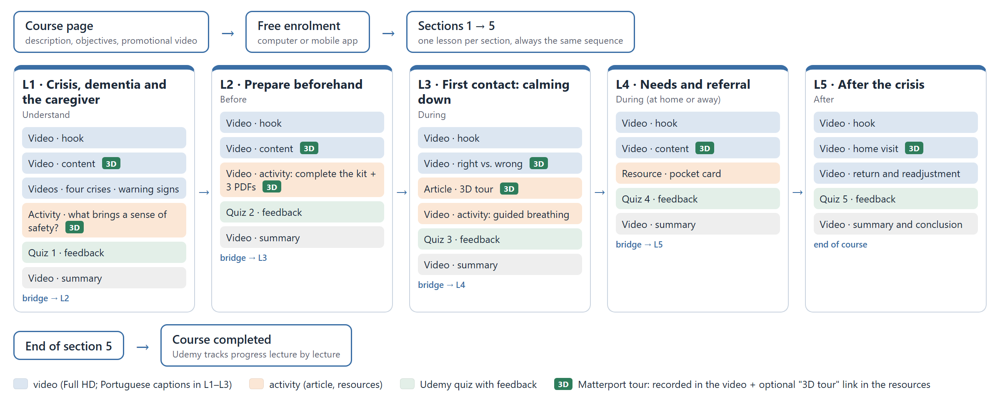
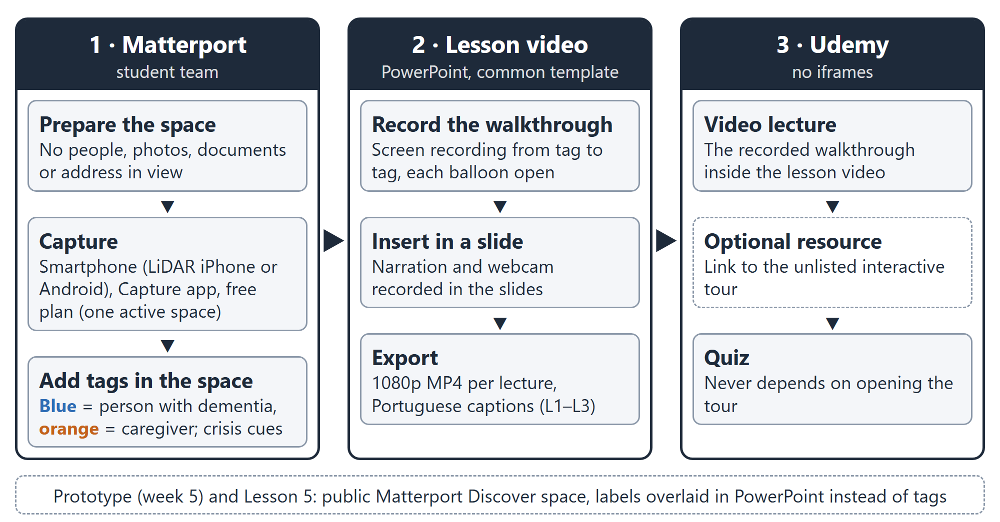
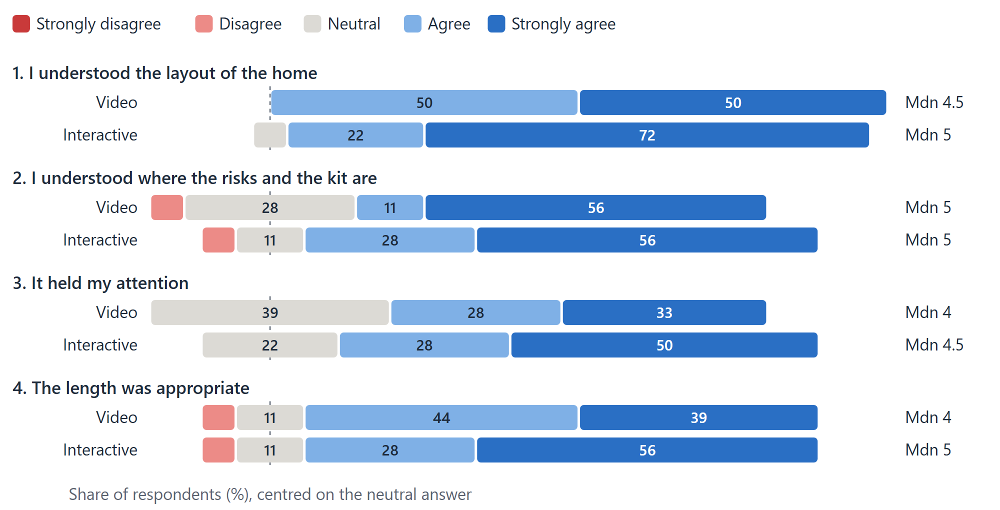

CAMUL 2026/2027 · Grupo 1 · ISEP
Visitas Matterport captadas por estudantes num MOOC para cuidadores de pessoas com demência em crise
Bruno Lopes · Tiago Teixeira · Rodrigo Silva · Ricardo Ferreira · Evandro Carvalho
Instituto Superior de Engenharia do Porto (ISEP), Porto, Portugal
Artigo (em inglês): Student-Captured Matterport Tours in a Massive Open Online Course for Dementia Caregivers Facing Crises
O problema
Uma crise quebra as rotinas de que a pessoa com demência depende
- +Os cuidadores de pessoas com demência relataram mais depressão, ansiedade e sobrecarga nos confinamentos da COVID-19 [1]Soysal et al., 2023
- −Os cuidadores informais não se sentem preparados para catástrofes: sem formação, sem provisões, com decisões difíceis [2]Pickering et al., 2021
- 41 min«Cuidar em Crise»: um curso grátis em português europeu, 5 lições, publicado na UdemyO nosso P1, nov. 2026
Cinco estudantes, uma lição cada, pela linha do tempo de uma crise: compreender, antes, durante, depois.
O curso · Fig. 1
Todas as lições têm a mesma sequência — e uma visita Matterport

Trabalhos relacionados · a lacuna
O Matterport é recente na educação — e a Udemy não tem iframes
- Espaços captados por profissionais, e não pelos estudantes que criam o curso [15], [16]
- Plataformas fechadas que não deixam incorporar conteúdos
- Nenhuma comparação entre o vídeo gravado da visita e a visita interativa do mesmo espaço
- QI1 · desenvolvimento: que fluxo de trabalho, custos e restrições quando uma equipa de estudantes capta os seus próprios espaços?
- QI2 · perceção: quão usável e útil é a visita, e como se compara o vídeo da visita com a visita interativa?
- QI3 · iteração: que problemas surgiram nos testes alfa e beta, e que mudanças de desenho se seguiram?
Método · modelo de investigação
Estudo de caso exploratório numa investigação baseada em design [18]
- 1Plataformas
- 2Tema e planeamento
- 3Modelo das lições
- 4Guiões
- 5Protótipo
- 6Curso integrado
- 7Testes alfa + beta
- 8Publicado
Oito iterações semanais, de 22 de setembro a 10 de novembro de 2026, cada uma com uma entrega e o feedback da professora.
- D1 registos de desenho
- D2 ficha de captura de cada autor
- D3 registos dos testes alfa e beta
- D4 116 commits
- D5 questionário
- D6 analytics da Udemy
Materiais · Fig. 2 e Fig. 3
Captámos as nossas próprias casas com o telemóvel


App Matterport Capture, plano grátis · sem pessoas, fotografias, documentos nem morada à vista · espaços «não listados».
Materiais · Tabela I
Cinco lições, quatro capturas, telemóveis muito diferentes
| Lição | Espaço | Dispositivo | Pontos de captura | Tempo de captura | Tags | Vídeo da visita | Problema principal |
|---|---|---|---|---|---|---|---|
| L1 | Casa de um elemento do grupo (5 divisões) | iPhone 17 Pro (LiDAR) | 17 | ≈ 15 min | 9 | 69 s | Faltou um ponto de captura; o plano grátis não deixa voltar a carregar |
| L2 | O mesmo espaço da L1 | — | — | — | 8 | 1:40 | Divisões alcançadas pela planta 2D |
| L3 | Sala de um elemento do grupo | Redmi Note 11 Pro | 2 | ≈ 10 min | 11 | 1:36 | Só 2 pontos: cobertura limitada; a taxa de fotogramas variável estragou um clipe |
| L4 | Apartamento, um espaço desconhecido | Samsung A33 5G | 8 | ≈ 45 min | 8 | 2:05 | Código de cores próprio; montagem da narração |
| L5 | Espaço público do Discover (plano B) | Terceiros | — | — | 5* | 58 s | Os espaços públicos não se editam: etiquetas sobrepostas no PowerPoint |
Tempos de captura e de tags estimados pelos autores (D2). * etiquetas sobre o vídeo, não tags dentro do espaço.
Materiais · Fig. 4
Sem iframes: a visita entra duas vezes no curso
- No vídeo: a gravação do ecrã da visita, tag a tag, com cada balão aberto
- Nos recursos: um link «Visita 3D (opcional)»
- Nenhum quiz depende do link — uma ligação lenta ou um telemóvel antigo nunca penalizam
A Udemy exige ≥ 30 min de vídeo num curso grátis e revê a qualidade: submetido a 7 nov., publicado a 9 nov. 2026.

Recolha de dados · D5
O mesmo espaço, as mesmas pessoas, dois formatos
- 1 · VídeoVídeo narrado da visita da L2 (1:40), depois 4 afirmações
- 2 · VisitaVisita interativa: encontrar 3 tags indicadas, até 5 min
- 3 · As mesmas 4 afirmações+ SUS sobre a visita interativa
- 4 · Preferência+ duas perguntas abertas e um bloco de perfil
Google Forms, em português europeu, anónimo, só adultos, 12–19 de novembro de 2026 · amostra de conveniência, mínimo de 20 respostas · os autores não responderam.
Resultados · QI1 desenvolvimento
Viável com ferramentas grátis — os limites vieram do plano e dos telemóveis
- 10–45minutos para captar um espaçoestimativas dos autores
- 5–30minutos para pôr as tagsestimativas dos autores
- 0 €plano grátis do Matterport, PowerPoint, curso grátis na Udemytodo o fluxo
- 31dos 79 commits foram na última iteração (21 no protótipo)D4
- Um espaço ativo por conta → espaços repartidos pelas contas dos autores
- Sem novo carregamento para corrigir um ponto em falta (L1) · menos pontos e pior cobertura sem LiDAR (L3, L4)
Resultados · QI2 perceção · Fig. 5
A visita interativa teve avaliação igual ou superior nas quatro afirmações
- N = 18 que viram o vídeo todo (de 20 respostas)
- Diferença mais clara: «Prendeu-me a atenção» (Mdn 4 → 4,5); os 5 que mudaram deram todos mais à visita
- Ninguém preferiu só o vídeo: 10 escolheram a visita interativa, 10 os dois formatos
Menos de 20 pares válidos → só estatística descritiva.

Resultados · QI2 usabilidade · Fig. 6
SUS médio de 77,3 para a visita interativa
77,3DP 13,9 · mediana 80 · intervalo 47,5–100 (N = 20)
- 14 de 20 resultados aceitáveis (> 70), 5 marginais, 1 abaixo de 50
- 79,1 no computador · 76,0 no telemóvel
- Acima da média de ≈ 70 resumida em [19]

Resultados · QI2 a tarefa
75 % encontraram as três tags — a navegação foi o mais difícil
- 15/20encontraram as três tags: 7 de 8 no computador, 8 de 12 no telemóvellimite de 5 min
- 11precisaram de menos de 2 minutos; 8 entre 2 e 5; 1 mais de 5 ou desistiudeclarado pelos próprios
- 16 · 12 · 3chegaram lá a andar · pela dollhouse ou planta · pelo menu de pesquisamais do que uma resposta possível
- O que ajudou a perceber a casa (14 respostas): 9 a visita interativa, 4 o vídeo ou a narração, 1 os dois
- Dificuldades: navegação 5, áudio e vídeo 3, encontrar tags 1, dispositivo 1 · 4 não acharam nada difícil
- Dois autores codificaram 22 unidades de forma independente: 95,5 % de concordância, kappa de Cohen 0,93
Resultados · QI3 iteração · Tabela II
11 problemas nos testes; os três graves mudaram todas as lições
| Problema | Origem | Gravidade | Mudança no desenho |
|---|---|---|---|
| Espaço público sem tags nossas; um testador não encontrou tags | Beta, professora | Alta | Cada lição captou o seu espaço, com tags lá dentro |
| Só ≈ 4–5 min de vídeo por lição | Beta, professora | Alta | Lições alargadas para ≈ 8 min de vídeo (41 min no total) |
| Nenhum elemento do grupo aparece nos vídeos | Beta, professora | Alta | Narração regravada com a câmara ligada, sempre no mesmo canto |
| Vídeo da visita quase sem narração · o link podia parecer obrigatório | Alfa | Baixa | A explicação passou para as tags; link «Visita 3D (opcional)» |
12 unidades codificadas: áudio e vídeo 8, avaliação 2, encontrar tags 1, outro 1 · 9 problemas resolvidos em todas as lições afetadas, 2 em parte (a L5 manteve o espaço do Discover; a L4 e a L5 não têm legendas).
Discussão
Os dois formatos completam-se
- O nosso 77,3 está em linha com a usabilidade relatada para o Matterport no ensino de enfermagem [15] e acima dos 72,1 / 68,1 de uma visita a um museu no telemóvel [17] — os contextos são diferentes e não se comparam diretamente
- O vídeo da visita guia sem esforço de navegação; a visita interativa dá controlo à custa desse esforço. Metade das pessoas escolheu os dois
- Planear os pontos de captura junto às portas e verificar todos os percursos antes de carregar — o plano grátis não deixa corrigir
- Mais presença espacial também pode competir com a aprendizagem pelos recursos cognitivos [12]
Conclusão
Os estudantes conseguem levar os seus espaços 3D para uma plataforma fechada
- Um fluxo viável com ferramentas grátis: o vídeo da visita dentro de cada aula e um link opcional para a visita interativa, sem nenhum quiz a depender do link
- SUS 77,3 · 75 % encontraram as três tags · ninguém preferiu só o vídeo
- Os testes mudaram o desenho de todas as lições: espaços próprios com tags lá dentro, ≈ 8 min de vídeo, narração regravada com a câmara ligada
- As principais restrições vieram do plano e dos dispositivos, não da tecnologia em si
Limitações
O que este estudo não mostra
- Amostra pequena e de conveniência (N = 20), com poucos cuidadores; nenhuma pessoa com demência participou
- Só se avaliou o espaço da L1 e da L2 — o da L5, o espaço público, não
- Todos viram o vídeo primeiro: a ordem pode ter influenciado as avaliações
- Os tempos de captura e de tags são estimativas dos autores
- Medimos a perceção, não a aprendizagem
Trabalho futuro
Cinco próximos passos
- 1Quizzes dentro da visita, nas tags: a pergunta no sítio que a pessoa acabou de ver
- 2Repetir o estudo com cuidadores informais reais, o público do curso
- 3Uma plataforma com iframes: incorporar a visita e compará-la com o vídeo
- 4Uma versão pensada para o telemóvel: 12 das 20 pessoas usaram o telemóvel
- 5Legendas em todas as lições e capturas com mais pontos ou com LiDAR
- Artigo, figuras e tabelas: no .zip entregue · Grupo 1
Equipa · Grupo 1
Quem fez o quê
| Elemento | Artigo | Projeto e dados |
|---|---|---|
| Bruno Lopes | Secção 3 Resultados · formatação IEEE | Lição L1 · figuras e tabelas · analytics da Udemy · codificador 1 · coordenação |
| Tiago Teixeira | Revisão das secções 1.1 e 1.2 · esta apresentação | Lição L2 · questionário no Google Forms · codificador 2 · ficha de captura da L2 |
| Rodrigo Silva | Secção 6 Trabalho futuro · revisão da secção 2 | Lição L3 · ficha de captura da L3 · referências |
| Ricardo Ferreira | Secção 4 Discussão · revisão da secção 3 | Lição L4 · ficha de captura da L4 · referências |
| Evandro Carvalho | Secção 5 Conclusão · revisão das secções 4–6 | Lição L5 · ficha de captura da L5 · referências |
As secções 1 e 2 e o resumo foram escritos em conjunto e revistos por todos · cada um também recolheu respostas ao questionário e confirmou o DOI das suas referências.
Obrigado
Perguntas?
- QI1 · Um fluxo grátis funciona; o plano e os telemóveis definem os limites
- QI2 · SUS 77,3 · 75 % encontraram as três tags · ninguém preferiu só o vídeo
- QI3 · Os testes mudaram todas as lições: espaços próprios, mais vídeo, câmara ligada
Visitas Matterport captadas por estudantes num MOOC para cuidadores de pessoas com demência em crise
Grupo 1 · Bruno Lopes · Tiago Teixeira · Rodrigo Silva · Ricardo Ferreira · Evandro Carvalho
Instituto Superior de Engenharia do Porto (ISEP) · CAMUL 2026/2027 · o curso na Udemy ↗